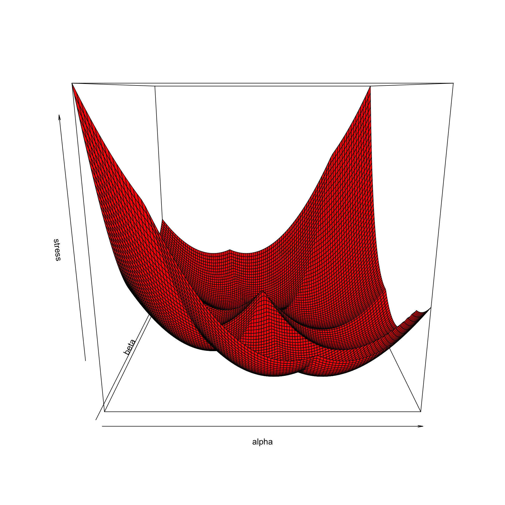
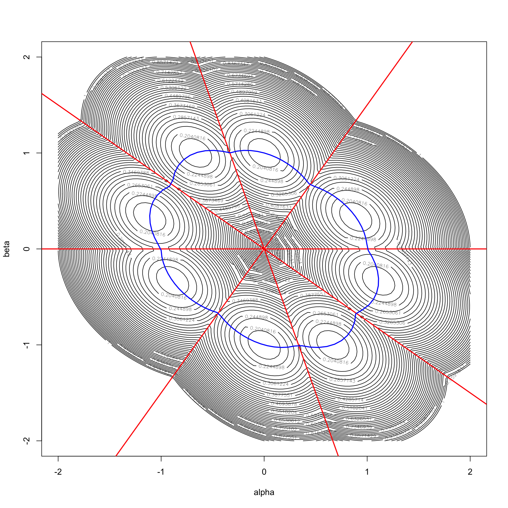

12 Unidimensional Scaling
For Unidimensional Scaling (UDS or 1MDS) the configuration is a matrix \(X\in\mathbb{R}^{n\times 1}\). We can trivially identify this single-column matrix \(X\) with the vector \(x\) of coordinates of \(n\) points on the real line. All our previous general MDS results remain valid for UDS, but we will use the additional structure that comes with \(p=1\) to discuss a number of special results.
Unidimensional scaling appears under different names in the literature such as seriation in archeology and sequencing in genetics. Often the algorithms permute the rows and columns of a matrix of dissimilarities to approximate some special structure. In this book seriation and sequencing are always understood to be the minimization of stress over \(x\), i.e. minimization of
\[\begin{equation} \sigma(x)=\mathop{\sum\sum}_{1\leq i<j\leq n}w_{ij}(\delta_{ij}-|x_i-x_j|)^2 (\#eq:unistress) \end{equation}\]
12.1 An example
We start the chapter with some pictures, similar to the ones in chapter @ref(propchapter). There are four objects. Dissimilarities are again chosen to be all equal, in this case to \(\frac16\sqrt{6}\). Weights are all equal to one.
We look at stress on the two-dimensional subspace spanned by the two vectors \(y=(0,-1,+1,0)\) and \(z=(-1.5,-.5.,+.5,+1.5)\). First we normalize both \(y\) and \(z\) by \(\rho=\eta^2\). This gives \(y=(0,-\frac18\sqrt{6},+\frac18\sqrt{6},0)\) and \(z=(-\frac18\sqrt{6},-\frac{1}{24}\sqrt{6},+\frac{1}{24}\sqrt{6},+\frac18\sqrt{6})\). We know from previous results (for example, De Leeuw and Stoop (1984)) that the equally spaced configuration \(z\) is the global minimizer of stress over \(\mathbb{R}^4\). Of course it is far from unique, because all 24 permutations of \(z\) have the same function value, and are consequently also global minima. In fact, there are 24 local minima, which are all global minima as well. (paired)
In the example, we do not minimize over all of \(\mathbb{R}^4\), but only over the subspace of linear combinations of \(y\) and \(z\). These linear combinations, with coefficients \(\alpha\) and \(\beta\), are given by
\[\begin{equation} x=\alpha y+\beta z=\frac{1}{24}\sqrt{6}\begin{bmatrix}\hfill-3\beta\\\hfill-3\alpha-\beta\\ \hfill3\alpha+\beta\\\hfill3\beta\end{bmatrix}, (\#eq:umdslincom) \end{equation}\]
with distances
\[\begin{equation} D(x)=\frac{1}{24}\sqrt{6}\begin{bmatrix}0&&&\\ |3\alpha-2\beta|&0&&\\ |3\alpha+4\beta|&|6\alpha+2\beta|&0&\\ |6\beta|&|3\alpha+4\beta|&|3\alpha-2\beta|&0 \end{bmatrix}. (\#eq:umdsdist) \end{equation}\]
We see that on the line \(\beta=\frac32\alpha\) both \(d_{12}(x)\) and \(d_{34}(x)\) are zero, on \(\beta=-3\alpha\) we have \(d_{23}(x)=0\), on \(\beta=0\) we have \(d_{14}(x)=0\), and finally \(d_{13}(x)=d_{24}(x)=0\) on \(\beta=-\frac34\alpha\). On those lines, through the origin, stress is not differentiable.
12.1.1 Perspective
We first make a global perspective plot, with both \(\alpha\) and \(\beta\) in the range \((-2.0,+2.0)\).
What do we see ? Definitely more ridges and valleys than in the two-dimensional example of chapter @ref(propchapter). In the one-dimensional case there is a ridge wherever two coordinates are equal, and thus one or more distances are zero. It is clear that at the bottom of each of the valleys there sits a local minimum.
12.1.2 Contour
A contour plot gives some additional details. In the plot we have drawn the four lines through the origin where one or more distances are zero (in red), and we have drawn the curve where \(\eta^2(x)=\rho(x)\) (in blue). Thus all local minima are on the blue line. The intersections of the red and the blue lines are the local minima of stress restricted to the red line. In those points there are both directions of ascent (along the red lines, in both directions) and of descent (into the adjoining valleys, in all directions).

We see once more the importance of the local minimum result from De Leeuw (1984) that we discussed in section @ref(proplocmin). The special relevbance of this result for UMDS was already pointed out by Pliner (1996). At a local minimum all distances are positive, and thus local minima must be in the interior of the eight cones defined by the four zero-distance lines. There are no saddle points, and only a single local maximum at the origin.
12.2 Order Formulation
Define an isocone as a closed convex cone of isotone vectors, and \(\text{int}(K)\) as its interior. Thus
\[\begin{equation} K:=\{x\in\mathbb{R}^n\mid x_{i_1}\leq\cdots\leq x_{i_n}\}, (\#eq:isoconc) \end{equation}\]
and
\[\begin{equation} \text{int}(K)=\{x\in\mathbb{R}^n\mid x_{i_1}<\cdots< x_{i_n}\}. (\#eq:isoconi) \end{equation}\]
where \((i_1,\cdots,i_n)\) is a permutation of \((1,\cdots,n)\). There are \(n!\) such closed isocones, and their union is all of \(\mathbb{R}^n\). Thus \(\min_x\sigma(x)=\min_{K\in\mathcal{K}}\min_{x\in K}\sigma(x)=\,\) where \(\mathcal{K}\) are the \(n!\) isocones.
For UMDS purposes the isocones are paired, because the negative of each configuration has the same distances between the \(n\) points, and thus the same stress. Thus each isocone and its negative cone are equivalent for UMDS, and we only have to consider \((n!)/2\) distinct orders.
Let us consider the problem of minimizing \(\sigma\) over a fixed \(K\in\mathcal{K}\). Now \[ \rho(x)=\mathop{\sum\sum}_{1\leq i<j\leq n}w_{ij}\delta_{ij}s_{ij}(x_i-x_j), \] and \(s_{ij}=\text{sign}(x_i-x_j)\) is the sign matrix of \(x\).
\(S(x)\) is the sign matrix of \(x\in\mathbb{R}^n\) if \(s_{ij}(x)=\text{sign}(x_i-x_j)\) for all \(i\) and \(j\), i.e.
\[\begin{equation} s_{ij}(x):=\begin{cases}+1&\text{ if }x_i>x_j,\\ -1&\text{ if }x_i<x_j,\\ \hfill 0&\text{ if }x_i=x_j. \end{cases} (\#eq:signdef) \end{equation}\]
The set of all sign matrices is \(\mathcal{S}\).
Sign matrices are hollow and anti-symmetric. A sign matrix \(S\) is strict if its only zeroes are on the diagonal, i.e. \(S=S(P\iota)\) for some permutation matrix \(P\). The set of strict sign matrices is \(\mathcal{S}_+\). Since there is a 1:1 correspondence between strict sign matrices and permutations, there are \(n!\) strict sign matrices. The row sums and column sums of a strict sign matrix are some permutation of the numbers \(n-2\iota+1\).
For all \(x\in\text{int}(K)\) the matrix \(S\) is the same strict sign matrix. Now \[ \rho(x)=\frac12\sum_{i=1}^n\sum_{j=1}^nw_{ij}\delta_{ij}s_{ij}(x_i-x_j)=x't_K, \] where \(t_K\) is the vector of row sums of the Hadamard product \(W\times\Delta\times S\), or
\[ \{t_K\}_i:=\sum_{j=1}^nw_{ij}\delta_{ij}s_{ij}. \] Again \(t_K\) only depends of \(K\), not on \(x\) as long as \(x\in\text{int}(K)\).
Thus on \(K\)
\[ \sigma(x)=1-2x't_K+x'Vx=1+(x-V^{-1}t_K)'V(x-V^{-1}t_K)-t_K'V^{-1}t_K^{\ }. \]
If there are no weights the \(t_K\) were first defined using isocones in De Leeuw and Heiser (1977). They point out that minimizing \((x-V^{-1}t)'V(x-V^{-1}t)\) over \(x\in K\) is a monotone regression problem (see @ref(mathmonreg)).
A crucial next step is in De Leeuw (2005), using the basic result in De Leeuw (1984). De Leeuw (2005) does use weights. We know if \(x\) is a local minimum then it must be in the interior of the isocone. If \(V^{-1}t_K\) is not in interior, then monotone regression will creates ties, and thus \(x\) will not be in the interior either. In fact for local minima of UMDS it is necessary and sufficient that \(V^{-1}t_K\) is in the interior of \(K\). This result, without weights and in somewhat different language, is also in Pliner (1984). Thus we can limit our search to those isocones for which \(V^{-1}t_K\in\text{int}(K)\). For those isocones, say the set \(\mathcal{K}^\circ\), the local minimum is at \(x=V^{-1}t_K\).
Thus \[ \min_{K\in\mathcal{K}}\min_{x\in K}\sigma(x)=1 -\max_{K\in\mathcal{K}^\circ}\ t_K'V^{-1}t_K^{\ }. \] There is also an early short but excellent paper by Defays (1978), which derives basically the same result in a non-geometrical way. Defays does not use weights, so in his paper \(V^{-1}\) is \(n^{-1}I\).
In the two-dimensional subspace of the example some of the \(n!\) cones are empty.
12.3 Permutation Formulation
12.4 Sign Matrix Formulation
\[\begin{equation} \rho(x)=\max_{S\in\mathcal{S}}\mathop{\sum\sum}_{1\leq i<j\leq n}w_{ij}\delta_{ij}s_{ij}(x_i-x_j), (\#eq:rhosign) \end{equation}\]
with the maximum attained for \(S=S(x)\). If we define
\[\begin{equation} t_i(y):=\sum_{j=1}^n w_{ij}\delta_{ij}s_{ij}(y), (\#eq:tdef) \end{equation}\]
then
\[\begin{equation} \sigma(x)=\min_y\{1+(x-V^{-1}t(y))'V(x-V^{-1}t(y))-t(y)'V^{-1}t(y)\}. (\#eq:unipart) \end{equation}\]
This implies
\[\begin{equation} \min_x\sigma(x)= 1 - \max_y\ t(y)'V^{-1}t(y) (\#eq:unidual) \end{equation}\]
12.5 Algorithms for UMDS
12.5.1 SMACOF
12.5.2 SMACOF (smoothed)
Now local minimum \(x_i\not= x_j\)
\[ \min_{x\in K}\sigma(x)=\mathop{\sum\sum}_{1\leq i<j\leq n}w_{ij}(\delta_{ij}-s_{ij}(x))(x_i-x_j))^2 \]
Each isocone has a sign matrix (hollow, antisymmetric)
\[ s_{ij}(x)=\begin{cases}+1&\text{ if }x_i>x_j,\\ -1&\text{ if }x_i<x_j,\\ \hfill 0&\text{ if }x_i=x_j. \end{cases} \] \[ \rho(x)=\sum_{i=1}^n\sum_{j=1}^nw_{ij}\delta_{ij}s_{ij}(x)(x_i-x_j)\geq \sum_{i=1}^n\sum_{j=1}^nw_{ij}\delta_{ij}s_{ij}(y)(x_i-x_j)= 2\sum_{i=1}^n x_i\sum_{j=1}^n w_{ij}\delta_{ij}s_{ij}(y) \]
Now
\[\begin{equation} \rho(x)=\sum_{i=1}^n\sum_{j=1}^nw_{ij}\delta_{ij}s_{ij}(x)(x_i-x_j), \end{equation}\]
and for all \(y\in\mathbb{R}^n\)
\[\begin{equation} \rho(x)\geq \sum_{i=1}^n\sum_{j=1}^nw_{ij}\delta_{ij}s_{ij}(y)(x_i-x_j)= 2\sum_{i=1}^n x_i\sum_{j=1}^n w_{ij}\delta_{ij}s_{ij}(y). \end{equation}\]
Stress is the maximum of a finite number of quadratics.